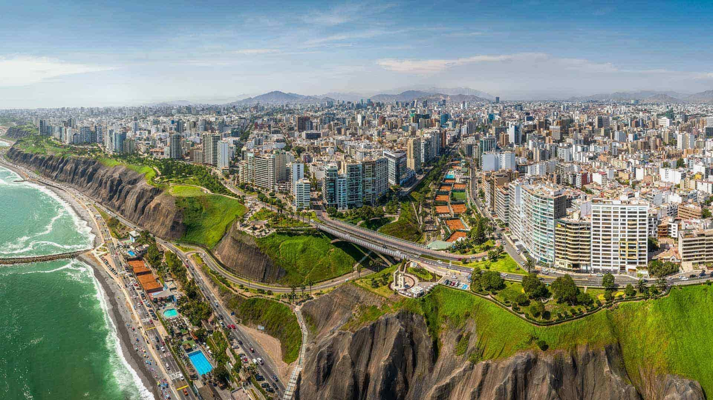
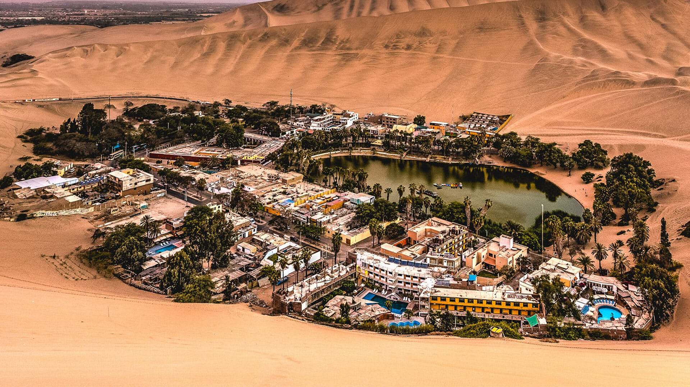
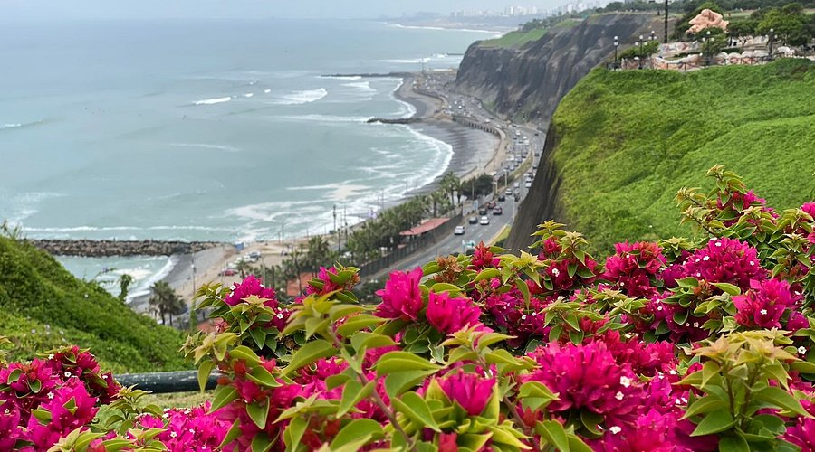
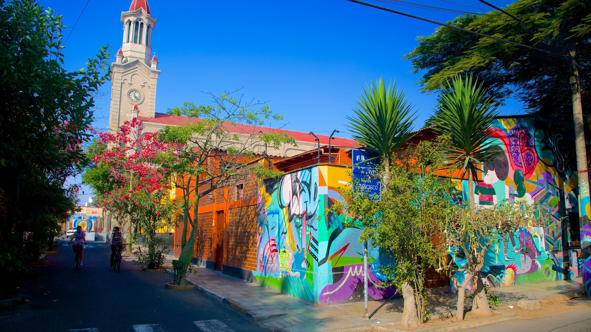
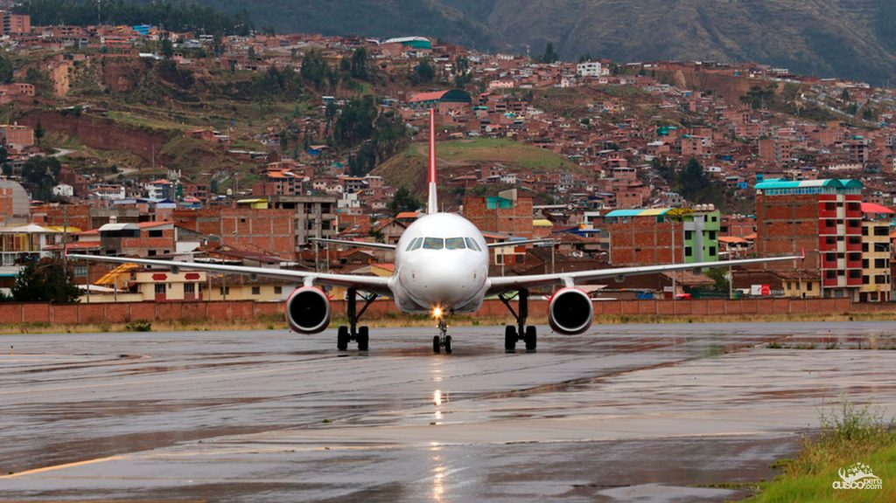
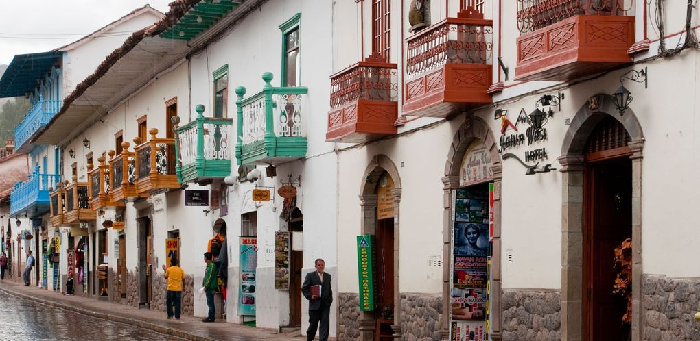
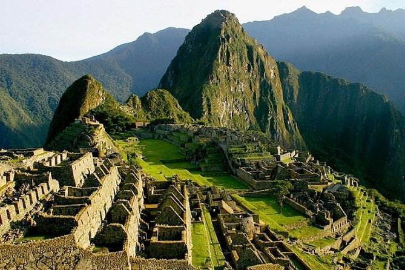
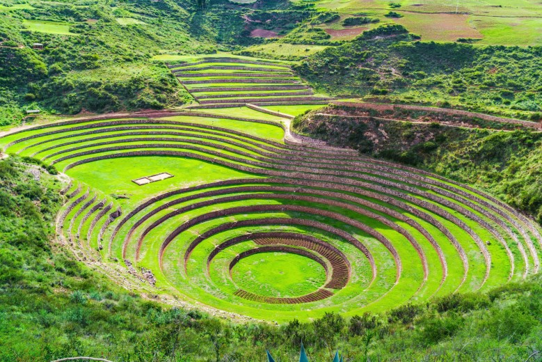
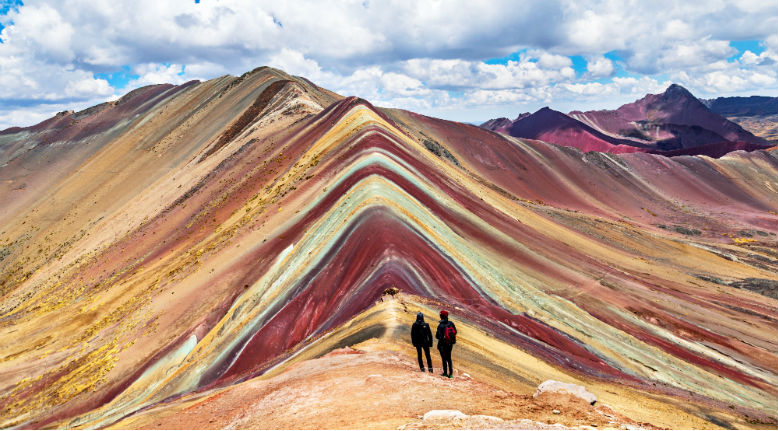
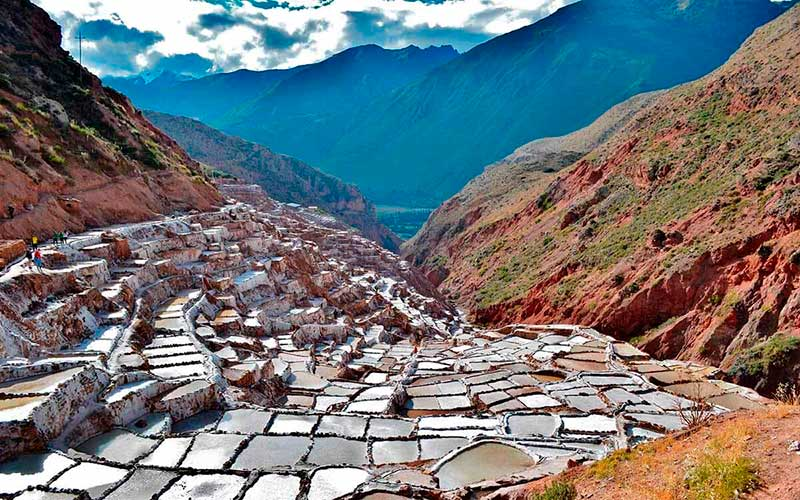

Logística
Latam & Sky Airline
Bagagem
1 Mala (12kg) + 1 Mochila (10kg)
Bases
Miraflores & San Blas

Chegada & Miraflores
Roteiro: Check-in no Airbnb. Caminhada pelo Malecón e Larcomar.
Look do Dia: Urban Casual
Maria: Calça jeans, t-shirt, jaqueta leve e tênis casual.
Victor: Calça chino, camiseta, jaqueta leve e tênis.

Huacachina & Paracas
Roteiro: Buggy nas dunas e passeio de barco (Dia todo).
Look do Dia: Deserto & Mar
Ambos: Roupas leves + corta-vento. Tênis e óculos escuros.
Na Mochilinha:
Protetor solar, água, lenços umedecidos e lanches.

Centro Histórico
Roteiro: Plaza Mayor, Catacumbas e jantar especial.
Look do Dia: Smart Casual
Maria: Vestido midi ou calça alfaiataria com tricot.
Victor: Calça escura, camisa/polo e suéter.

Barranco
Roteiro: Arte de rua, Puente de los Suspiros e almoço no Isolina.
Look do Dia: Street Style
Ambos: Roupas estilosas para fotos em murais coloridos.

Voo & Aclimatação
Roteiro: Chegada 11:30. Descanso total e chá de coca.
Look do Dia: Conforto Total
Ambos: Conjunto de moletom e jaqueta quente para o desembarque.

Compras & Centro
Roteiro: Centro Artesanal e Plaza de Armas.
Look do Dia: Camadas Leves
Ambos: T-shirt + fleece. Tira e põe conforme o sol de Cusco.

Machu Picchu
Logística: Saída 02:00. MP às 09:00. Retorno 15:20.
Look do Dia: Trekking Tático
Ambos: Camiseta dry-fit, fleece, corta-vento e bota de trilha.
Na Mochilinha:
Passaportes, ingressos, água, repelente e capa de chuva.

Vale Sagrado
Roteiro: Pisac, Ollantaytambo e Chinchero.
Look do Dia: Outdoor Casual
Ambos: Calça confortável, bota e casaco quente.
Na Mochilinha:
Boleto Turístico, dinheiro em Soles e água.

Montanha Colorida
Roteiro: Trekking extremo (5.200m de altitude).
Look do Dia: Frio Extremo
Ambos: Térmica, fleece grosso, jaqueta robusta, luvas e gorro.
Na Mochilinha:
Balas de coca, oxigênio (opcional), água e Soles para o cavalo.

Maras & Moray
Roteiro: Salinas e círculos agrícolas.
Look do Dia: Proteção Solar
Ambos: Roupas leves, óculos e muito protetor solar.
Na Mochilinha:
20 Soles p/ entrada de Maras (espécie) e Boleto Turístico.
Despedida
Voo: 14:05. Check-out 11:30.
Look do Dia: Peso no Corpo
Dica: Viajar com a bota e o casaco mais pesado.
Mala de 12kg
- 1 Calça jeans, 2 Calças de trekking/legging, 1 Bermuda.
- 5 Camisetas, 1 Térmica, 1 Fleece grosso, 1 Jaqueta corta-vento.
- 1 Roupa mais arrumada (Lima).
Mochila de 10kg
- Eletrônicos, powerbank, documentos e farmácia básica.
- Dramin, Soroche Pill (altitude) e relaxante muscular.
Budget Total: ~3.000 Soles (PEN)
Cartão (70%)
2.100 PEN
Restaurantes Lima, Ubers, Agências.Espécie (30%)
900 PEN
Feiras, Cavalos, Maras, Gorjetas.Estimativa por Etapa
| Local | Custo Médio | Tipo |
|---|---|---|
| Lima (4 dias) | 1.000 PEN | Cartão |
| Cusco Lembranças | 500 PEN | Dinheiro |
| Machu Picchu | 400 PEN | Cartão |
| Tours (3 dias) | 750 PEN | Misto |
| Maras/Emergência | 350 PEN | Dinheiro |